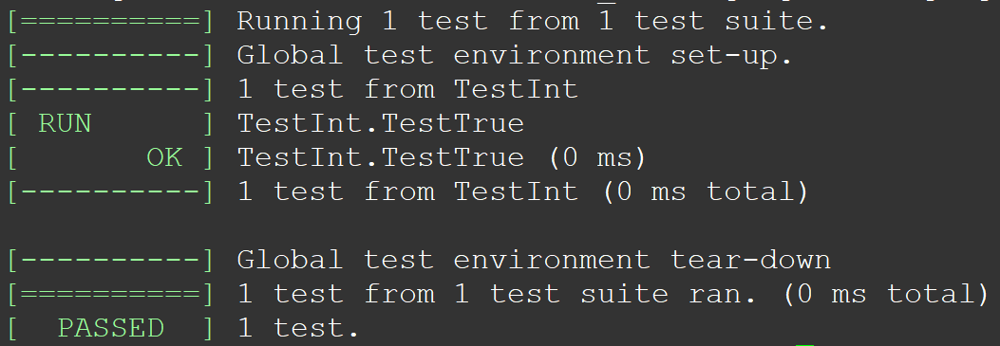
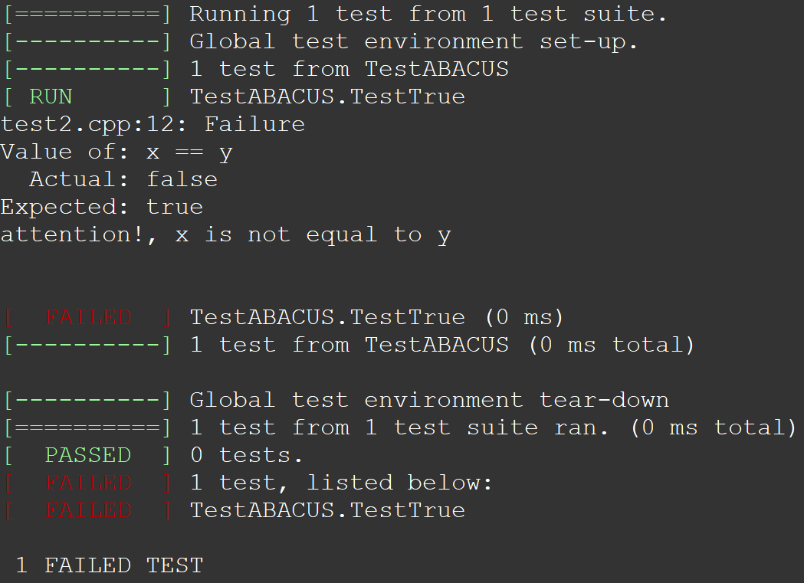
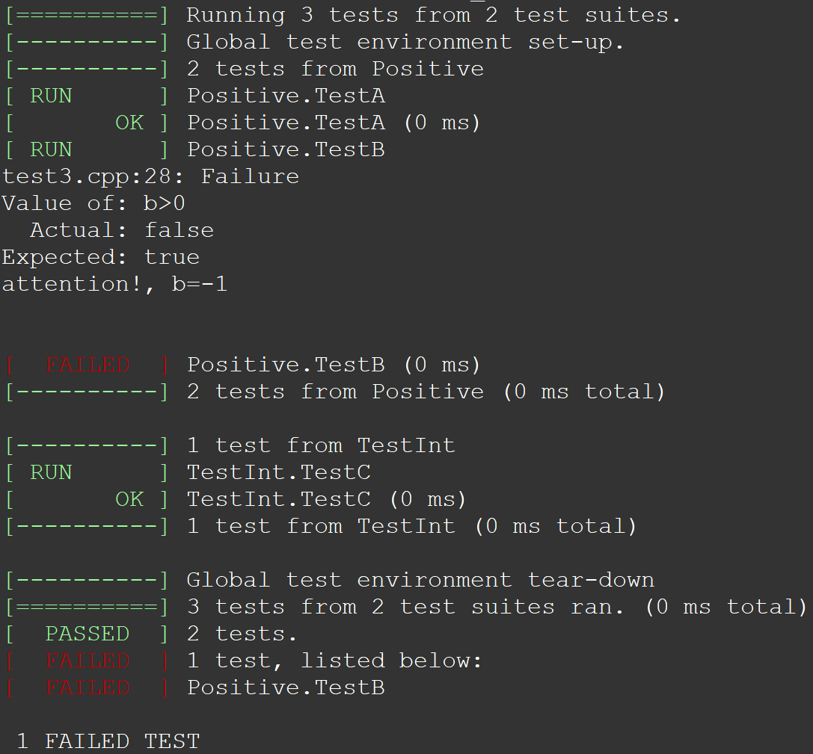
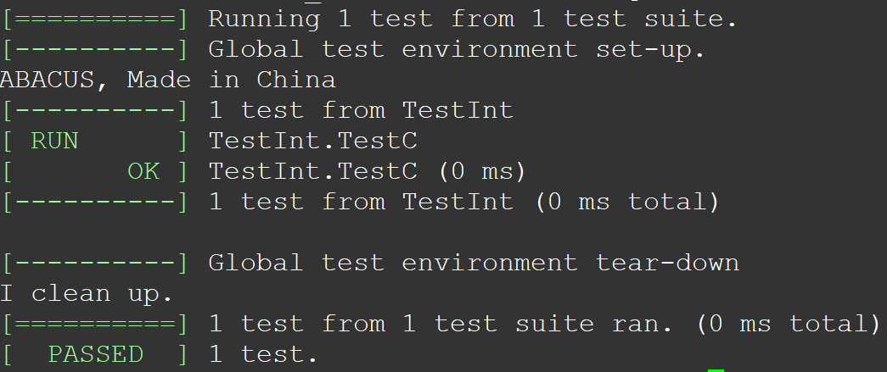

ABACUS 中的测试（二）：测试工具 gtest
作者：彭星亮，邮箱：pxlppq007@163.com；赵天琦，邮箱：zhaotq13@tsinghua.org.cn
审核：陈默涵，邮箱：mohanchen@pku.edu.cn
最后更新时间：2023/12/08
一、gtest 简介
手动编写和执行测试用例可能会非常繁琐和耗时，因此我们在 C++ 程序的开发流程中引入了 Google Test 框架（以下简称 gtest）。gtest 是一个由 Google 开发的 C++ 单元测试框架。它为开发者提供了一套强大的工具和功能，用于编写、组织和运行测试用例。通过使用宏和断言，开发者可以较为轻松地定义测试用例和验证预期结果。
测试套件（test suite）的设计可以反映程序的结构。测试套件内的测试所共享的数据可放入同一个文件夹。一个测试项目可以包括多个测试套件。
gtest 的使用需要定义好对应的 TEST，TEST_F，TEST_P 宏来自动运行算例，结果的对比主要通过使用 ASSERT_* 或者 EXPECT_* 宏来进行。
gtest框架支持 C++11 及以上的 C++ 标准，支持 Linux、MacOS、Windows 等众多平台，支持 gcc 5.0+、clang5.0+、MSVC2015+ 编译器，支持 Bazel 以及 cmake 构建工具。- 关于
gtest的 User's Guide 的链接如下: GoogleTest User’s Guide | GoogleTest gtest的 github 仓库地址：google/googletest: GoogleTest - Google Testing and Mocking Framework (github.com)
二、gtest 的安装及测试
在 Linux 环境下安装 gtest 的第一种方法：apt 安装（如果无效，请尝试后面的方法）
sudo apt install googletest
第二种方法：从 github 下载并安装（需要有管理员 sudo 权限）：
git clone [https://github.com/google/googletest](https://github.com.cnpmjs.org/google/googletest)
cd googletest
cmake .
make
sudo make install
使用如下的算例验证是否安装成功
//test.cpp
#include "gtest/gtest.h"
TEST(TestInt,TestTrue)
{
EXPECT_TRUE(2 == 2);
}
/*
int main(int argc, char** argv)
{
testing::InitGoogleTest(&argc, argv);
return RUN_ALL_TESTS();
}
*/
以上算例可以不包含 main 函数（也可以写 main 函数），只要以下编译的时候加上 -lgtest_main，之后执行
g++ test.cpp -lgtest -lpthread -lgtest_main
./a.out
注意，如果 g++ 编译器版本太旧，需要添加参数 -std=c++14 才能编译通过。
运行之后，预期程序输出如下

三、gtest 的断言
gtest里有一个核心概念叫“断言”，是对预期程序是否正确的一种“逻辑判断”，并且返回判断结果。gtest提供了一个测试断言指令集。每个断言是宏，类似于函数调用。测试断言会产生测试结果，分成 3 种情况：
success（成功，代表测试通过）nonfatal failure（失败，非致命失败，程序不中断）fatal failure（失败，致命失败，程序中断）。
gtest中有 2 种断言类型：ASSERT_*和EXPECT_*。ASSERT_*版本的断言失败会产生致命失败，并结束当前函数。EXPECT_*版本的断言产生非致命失败，不会终止当前函数。推荐使用EXPECT_*断言。
- 注意：当某个断言不通过时，开发者可以自定义输出的故障消息，只需在函数后面添加相应的 C++ 流运算符 << 即可，之后会有例子给出说明。
四、gtest 的宏
1. TEST 宏
在测试文件里，可以直接定义 TEST（类似一个 C++ 的函数）来编写测试代码，TEST 是一个 gtest 里被经常使用的宏（TEST 的英文介绍），是 gtest 里最基本的组成单元，其代码格式如下：
TEST(<em>TestSuiteName</em>, <em>TestName</em>) {
... <em>statements</em> ...
}
- TestSuiteName是该 TestSuite 的名字，可以自己起名
- TestName是在这个 TestSuite 里具体的测试的名字，可以自己起名
- 注意
TestSuiteName和TestName的命名中不要包含“_”，当然如果你加了编译也不会报错，但是会有隐患，推荐使用首字母大写来分隔单词 - 在
TEST宏里面定义的statements是要被执行的测试代码。
下面是一个例子：
//test2.cpp
#include <gtest/gtest.h>
#include <iomanip>
TEST(TestABACUS,TestTrue)
{
using namespace std;
EXPECT_TRUE(2 == 2) << "attention!, 2 is not equal to 2" << endl;
double x=2.0;
double y=2.000001;
EXPECT_TRUE(x == y) << "attention!, x is not equal to y" << endl;
}
编译后的运行结果是

可以看到，这里提示第二个测试是失败的。
2. TEST_F 宏
在测试中如果要对相同的数据进行不同的判断（不同的判断指不同的测试）时，可以使用 TEST_F 宏，此时需要在测试代码里额外定义一个类（从给定的基类派生出一个类），我们管它叫做 test fixture 类（Test Fixtures 英文介绍），这个类的作用是包含所要测试的数据，并且可以传到不同的 TEST_F“函数”里，下面例子是 TEST_F 宏使用的格式。
TEST_F(<em>TestFixtureName</em>, <em>TestName</em>) {
... <em>statements</em> ...
}
第一个参数 TestFixtureName 是需要定义的类的名字，定义这个类的时候，它需继承自 ::testing::Test 类。第二个参数 TestName 是自己命名的任务名。
创建一个 test`` ``fixture 类需要注意的是：
- 从
testing::Test派生一个类。在类的开始部分使用protected:，因为我们希望在子类中访问固件成员。 - 在类里，定义你想使用的任何数据成员，这样这个类可以在多个
TEST_F宏里使用。 - 在编写单元测试时，经常需要对测试中使用的对象进行初始化。这可以通过编写默认构造函数或
SetUp()函数来实现。SetUp()函数是 Google Test 测试框架中用于在每个测试用例开始前准备对象的一个函数。也可以用 C++ 的关键字override来标明覆盖了基类的同名虚函数SetUp()。 - 如果需要，还可以在
Test Fixtures类里面定义TearDown()函数，把分配的临时空间给释放掉。 - 如果需要，还可以在
Test Fixtures类里面定义其它成员函数，以方便不同的TEST_F调用。
//test3.cpp
#include <gtest/gtest.h>
#include <iomanip>
class Positive : public testing::Test
{
protected:
int a;
int b;
void SetUp() override
{
a = 1;
b = -1;
}
};
TEST_F(Positive,TestA)
{
using namespace std;
EXPECT_TRUE(a>0)
<< "attention!, a=" << a << endl;
}
TEST_F(Positive,TestB)
{
using namespace std;
EXPECT_TRUE(b>0)
<< "attention!, b=" << b << endl;
}
TEST(TestInt,TestC)
{
EXPECT_TRUE(2 == 2);
}
编译执行，结果如下

五、gtest 的 mock 功能
在某些测试里，需要中间调用别的类（例如类 A）才能够完成接下去的程序运行，但是类 A 太复杂，不适合定义在类里，这个时候可以造一个假类（MockA）来模仿真正的类 A 的操作，这个过程就叫做 mock！但是要注意的是：虽然 mock 某个对象可以帮助你在测试中消除不必要的依赖关系，使它们变得快速和可靠，但在 C++ 中手动去写 mock 代码是困难的。因此，Google Test 提供了 gmock，它是 gtest 的一个库，一个辅助框架，用来创建 mock 类，使用时需要 include "gmock/gmock.h"。
实际写测试的时候，mock 的思想可以借鉴。然而实际上，目前 ABACUS 的大部分需要 mock 的地方都可以通过自己写一个空的类来实现替代功能，因此如果有同学老师感兴趣这部分内容，可以参考 Goolge Test 官网教程。这部分就不多做介绍了。
六、gtest 里的全局环境设置
在 Google Test 中，全局环境（Global Environment）是指一个测试程序的全局设置，它允许在整个测试程序开始前和结束后执行一些特定的代码。例如，全局测试资源的初始化和清理，全局状态的设置，运行只需要一次性执行的代码。
- 全局环境设置方法：可以通过继承
testing::Environment类并实现SetUp()和TearDown()方法来使用全局环境。 - 下面是一个例子：
// test environment
#include <gtest/gtest.h>
#include <iomanip>
class MyEnvironment : public ::testing::Environment {
public:
void SetUp() override {
std::cout << "ABACUS, Made in China" << std::endl;
}
void TearDown() override {
std::cout << "I clean up." << std::endl;
}
};
TEST(TestInt,TestC)
{
EXPECT_TRUE(2 == 2);
}
int main(int argc, char **argv) {
testing::InitGoogleTest(&argc, argv);
testing::AddGlobalTestEnvironment(new MyEnvironment());
return RUN_ALL_TESTS();
}
编译后运行结果，可以看到测试开始前打印出的“ABACUS，Made in China”信息，以及测试结束后打印出来的“I clean up.”信息，分别对应的是上面的 MyEnvironment 类里 SetUp 和 TearDown 函数所执行的内容。

七、常用 ASSERT 和 EXPECT 语句
常用的 ASSERT 和 EXPECT 这两大类断言的相关语句如下，开发者可以在处理需要的数据类型时候灵活运用，例如布尔类型、二元值、字符串、浮点数等数据类型（附上这些语句的原文链接：Assertions Reference | GoogleTest)。
| 致命断言 | 非致命断言 | 通过条件 |
|---|---|---|
| 布尔类型 | ||
| ASSERT_TRUE(condition) | EXPECT_TRUE(condition) | condition 为 true |
| ASSERT_FALSE(condition) | EXPECT_FALSE(condition) | condition 为 false |
| 二元值 | ||
| ASSERT_EQ(val1, val2) | EXPECT_EQ(val1, val2) | val1 = val2 |
| ASSERT_NE(val1, val2) | EXPECT_NE(val1, val2) | val1 != val2 |
| ASSERT_LT(val1, val2) | EXPECT_LT(val1, val2) | val1 < val2 |
| ASSERT_LE(val1, val2) | EXPECT_LE(val1, val2) | val1 <= val2 |
| ASSERT_GT(val1, val2) | EXPECT_GT(val1, val2) | val1 > val2 |
| ASSERT_GE(val1, val2) | EXPECT_GE(val1, val2) | val1 >= val2 |
| 字符串(C string) | ||
| ASSERT_STREQ(val1, val2) | EXPECT_STREQ(val1, val2) | val1 == val2 |
| ASSERT_STRNE(val1, val2) | EXPECT_STRNE(val1, val2) | val1 != val2 |
| ASSERT_STRCASEEQ(val1, val2) | EXPECT_STRCASEEQ(val1, val2) | 忽略大小写 val1 == val2 |
| ASSERT_STRCASENE(val1, val2) | EXPECT_STRCASENE(val1, val2) | 忽略大小写 val1 != val2 |
| 浮点型 | ||
| ASSERT_FLOAT_EQ(val1, val2) | EXPECT_FLOAT_EQ(val1, val2) | float 型 val1 和 val2 相等 |
| ASSERT_DOUBLE_EQ(val1, val2) | EXPECT_DOUBLE_EQ(val1, val2) | double 型 val1 和 val2 相等 |
| ASSERT_NEAR(val1, val2,abs_error) | EXPECT_NEAR(val1, val2,abs_error) | val1 和 val2 差的绝对值不大于 abs_error |
| 异常检查 | ||
| ASSERT_THROW(statement, exception_type); | EXPECT_THROW(statement, exception_type); | statement throws an exception of the given type |
| ASSERT_ANY_THROW(statement); | EXPECT_ANY_THROW(statement); | statement throws an exception of any type |
| ASSERT_NO_THROW(statement); | EXPECT_NO_THROW(statement); | statement doesn't throw any exception |
| 死亡断言 Death Assertions | ||
| ASSERT_DEATH(statement,matcher); | EXPECT_DEATH(statement, matcher); | statement 引起程序非 0 退出，并产生的 stderr 与 matcher 一致。matcher 为可设为“”表示任意的 stderr 都成立。 |
| ASSERT_EXIT(statement,predict,matcher); | EXPECT_EXIT(statement, predict, matcher); | statement 产生的结束时的返回值与 predict 一致，产生的 stderr 与 matcher 一致 |